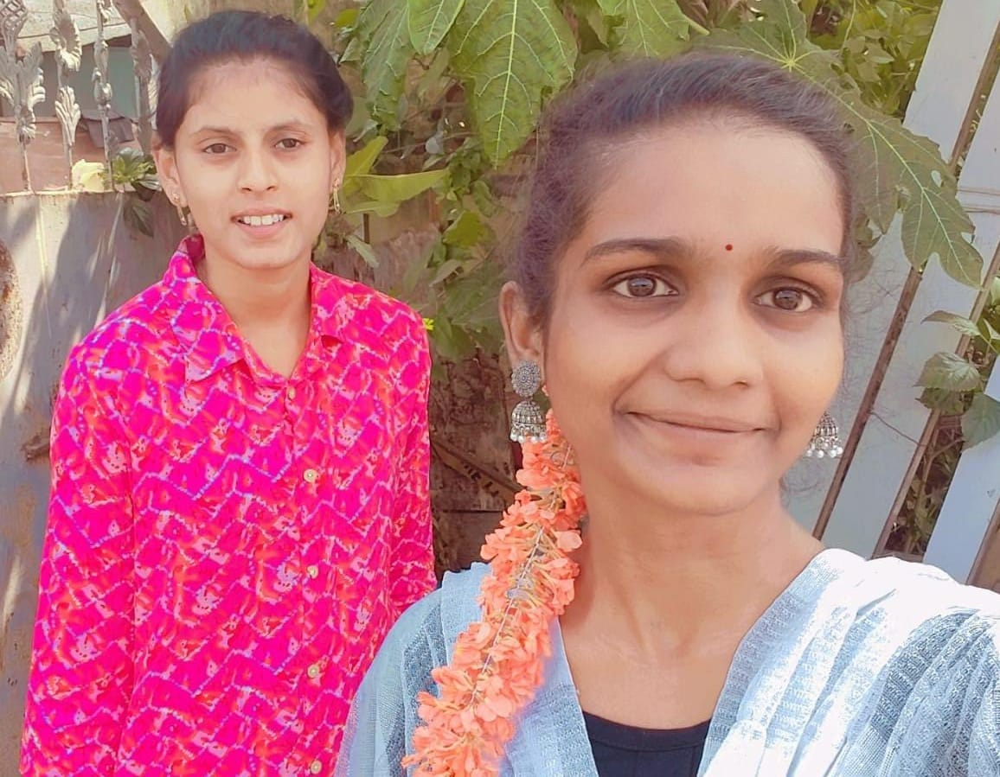
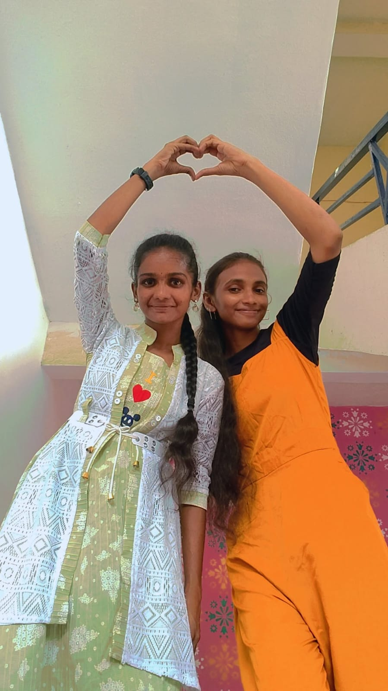
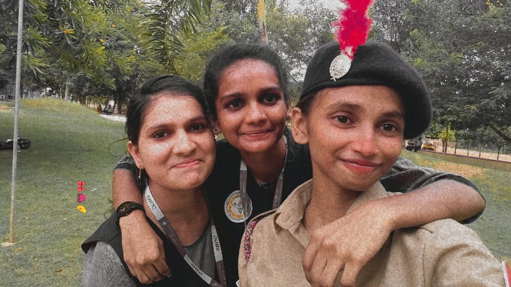

She came into my life when we were in 7th class, and from that moment, our friendship started growing beautifully. Even though the COVID period separated us physically and changed many things around us, it never affected our bond. Distance only made our friendship stronger. Over the years, she became my best buddy and one of the most important people in my life. She understands me deeply, supports me during my ups and downs, and always stands by my side no matter what. The bond we share is strong, genuine, and unbreakable. I truly cherish her presence in my life, and I am grateful for a friendship that has remained constant through every phase.

She entered my life during my intermediate days, but she quickly became someone irreplaceable. From the moment we started talking, there was a comfort and connection that felt rare and special. What began as a simple friendship slowly turned into one of the strongest bonds in my life. Every moment spent with her holds a special meaning for me — visiting temples together, going to the beach, walking and talking for hours, laughing over small things, and sharing silent understandings that words cannot always explain. Even if I don’t express everything openly, my heart knows how important she is to me. The bond I share with her is unbreakable, filled with trust, comfort, and genuine care. One of the most blessed moments in my life was the day she came into it. Her presence has added light, strength, and countless beautiful memories to my journey.

B.Tech brought many new faces into our lives, but among them, one special connection stands out. Sravani she is the beautiful common friend that B.Tech gifted to both of us. What started as a simple friendship slowly turned into a bond filled with fun, comfort, and understanding. Doing reels with you, spending random moments together, laughing without limits, and creating small but unforgettable memories — every second feels so special. The energy, the positivity, and the genuine heart you carry make you truly different. In this entire B.Tech journey, finding a kind-hearted and pure soul like you is something we will always be grateful for. You are not just a friend; you are one of the best blessings this phase of life has given us.